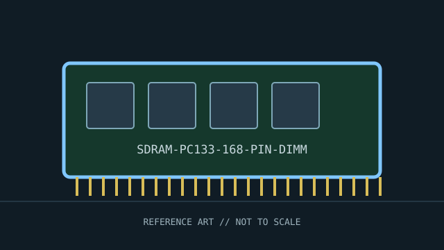

[ INDIVIDUAL COMPONENT // MEMORY / RAM ]
SDRAM PC133 168-pin DIMM
SDR SDRAM desktop DIMM standard. This record identifies a distinct product or standards-defined module class; specifications not verified for this exact identity are deliberately left open.

IDENTITY: SDRAM PC133 168-pin DIMM is cataloged as sdr sdram desktop dimm standard. Standards entries describe a module class; named manufacturer entries describe one SKU. Do not treat them as interchangeable records.
Recorded specifications
| Catalog identity | SDRAM PC133 168-pin DIMM |
|---|---|
| Record type | SDR SDRAM desktop DIMM standard |
| Verified specifications | 168-pin DIMM; 64-bit non-ECC interface is common in PC modules; PC133 denotes a 133 MHz clock class. Capacity, ranks, CAS latency, and voltage depend on the individual module and SDRAM devices. |
| Compatibility | Use only in a motherboard designed for 168-pin SDR SDRAM. SDR DIMMs are not interchangeable with DDR DIMMs; keying, signaling, and timing differ. Board chipset determines supported density and capacity. |
| Unverified/variable details | Only values supported by the cited standard or manufacturer source are stated. Confirm exact part number/revision, SPD, ranks, timings, and voltage on the specimen when not specified above. |
Platform compatibility and service
- Use only in a motherboard designed for 168-pin SDR SDRAM. SDR DIMMs are not interchangeable with DDR DIMMs; keying, signaling, and timing differ. Board chipset determines supported density and capacity.
- Before installation, record the full label, manufacturer, part number, revision/date code, contact condition, chip markings, and SPD contents where present.
- Use ESD precautions, handle the module by its edges, and never force it into a slot with different keying. Power down and follow the host’s service manual.
- For server/ECC modules, confirm CPU support, buffering type, channel population, supported ranks/densities, and firmware behavior; physical fit is not proof of ECC operation.
Archival and service notes
This is a standards-era form/rate class, not a manufacturer product. Record the exact module label, chip markings, SPD presence/data, rank organization, and host manual. Photograph both sides before cleaning; retain the host manual, SPD dump, test host, BIOS revision, and memory-test result with the catalog record.
Sources & further reading
- JEDEC — SDR SDRAM standards and publicationsStandards-body index; the applicable legacy SDR SDRAM specification defines electrical and timing requirements.
- PC Guide — SDRAM referenceHistorical secondary reference for SDRAM terminology and module categories.
Manufacturer source identifies the named SKU where provided; standards pages describe a generation or module class. A source-family page may not capture every revision. Check the precise specimen and platform service documentation.